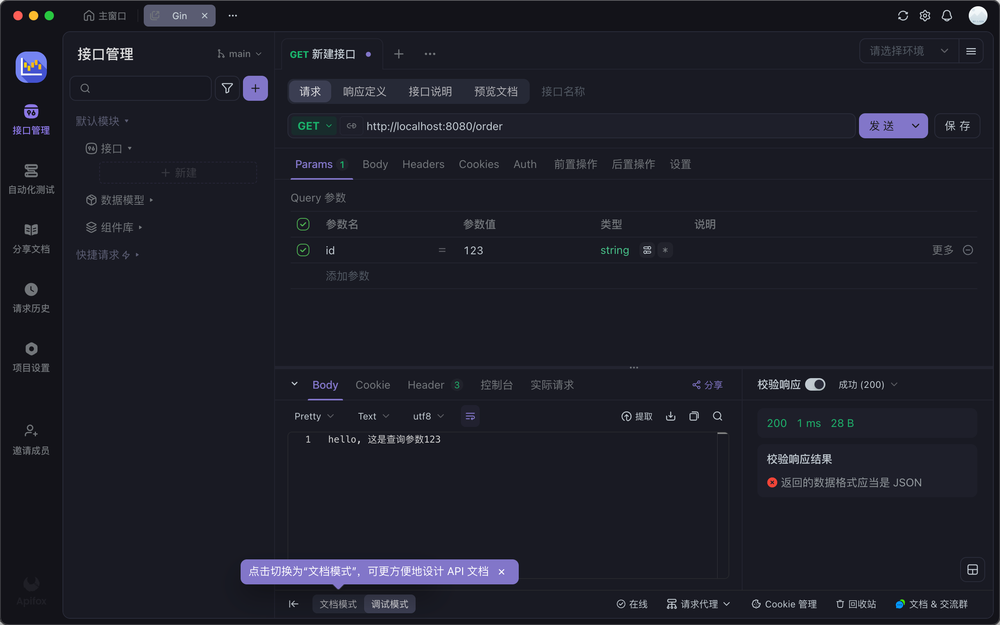

Gin
Gin 的学习要点：
- 如何定义路由：包括参数路由、通配符路由
- 如何处理输入输出
- 如何使用 middleware 解决 AOP 问题
Gin 入门：最简 Gin 应用
安装
要安装 Gin 软件包，需要先安装 Go 并设置 Go 工作区。
1.下载并安装 gin：
go get -u github.com/gin-gonic/gin
2.将 gin 引入到代码中：
import "github.com/gin-gonic/gin"
3.（可选）如果使用诸如 http.StatusOK 之类的常量，则需要引入 net/http 包：
import "net/http"
示例代码
package main
import "github.com/gin-gonic/gin"
func main() {
server := gin.Default()
server.GET("/ping", func(c *gin.Context) {
c.JSON(200, gin.H{
"message": "pong",
})
})
server.Run(":8080") // 监听并在 0.0.0.0:8080 上启动服务
}
然后, 执行 go run example.go 命令来运行代码：
$ go run main.go
[GIN-debug] [WARNING] Creating an Engine instance with the Logger and Recovery middleware already attached.
[GIN-debug] [WARNING] Running in "debug" mode. Switch to "release" mode in production.
- using env: export GIN_MODE=release
- using code: gin.SetMode(gin.ReleaseMode)
[GIN-debug] GET /ping --> main.main.func1 (3 handlers)
[GIN-debug] [WARNING] You trusted all proxies, this is NOT safe. We recommend you to set a value.
Please check https://pkg.go.dev/github.com/gin-gonic/gin#readme-don-t-trust-all-proxies for details.
[GIN-debug] Environment variable PORT is undefined. Using port :8080 by default
[GIN-debug] Listening and serving HTTP on :8080
Gin 入门：gin.Engine
- 在 Gin 里面，一个 Web 服务器被抽象成为 Engine。
- 可以在一个应用里面创建多个 Engine 实例，监听不同的端口。
- Engine 承担了路由注册、接入 middleware的核心职责。
- 右图中它组合了 RouterGroup，RouterGroup 才是实现路由功能的核心组件。
Gin 入门：gin.Context
gin.Context 是 Gin 里面的核心类型。应该说，你日常最经常的就是和它打交道。
它的字面意思就是“上下文”，在 Gin 里面，它的核心职责是：
- 处理请求
- 返回响应
// 当一个 HTTP 请求，用 GET 方法访问的时候，如果访问路径是 /hello，
server.GET("/ping", func(c *gin.Context) {
// 就执行这段代码
c.JSON(http.StatusOK, gin.H{
"message": "pong",
})
})
type Context struct {
writermem responseWriter
Request *http.Request
Writer ResponseWriter
...
}
上述代码中的 Request 代表的就是请求，Writer 代表的就是响应。
Gin 入门：路由注册
要灵活运用 IDE 的代码提示功能和源码查看功能。
比如输入 server. 之后，IDE 就开始弹提示。
通过查阅 API 定义来快速掌握 API 用法。
server.POST("/post", func(context *gin.Context) {
context.String(http.StatusOK, "post")
})
Gin 为每一个 HTTP 方法都提供了一个注册路由的方法。
基本上都是两个参数：
- 路由规则：比如说 /hello 这种静态路由。
- 处理函数：也就是我们注册的，返回 hello, world的方法。
Gin 支持很多类型的路由：
- 静态路由：完全匹配的路由，也就是前面我们注册的 ping 的路由。
- 参数路由：在路径中带上了参数的路由。要带冒号，不然会被理解为静态路由。
- 通配符路由：任意匹配的路由。
server.POST("/post", func(context *gin.Context) {
context.String(http.StatusOK, "post")
})
server.GET("/users/:name", func(context *gin.Context) {
context.String(http.StatusOK, "hello, 这是参数路由")
})
server.GET("/views/*.html", func(context *gin.Context) {
context.String(http.StatusOK, "hello, 这是通配符路由")
})
Gin 路由：参数路由
参数路由的关键是获得参数，Gin 里面提供了 Param 方法。
server.GET("/users/:name", func(context *gin.Context) {
name := context.Param("name")
context.String(http.StatusOK, "hello, 这是参数路由"+name)
})
Gin 路由：查询参数
查询参数和参数路由是不太一样的，查询参数是指在 URL 后面附着的参数，要用 Query 方法来拿到查询参数的值。
server.GET("/order", func(context *gin.Context) {
oid := context.Query("id")
context.String(http.StatusOK, "hello, 这是查询参数"+oid)
})

Gin 路由：通配符路由
通配符路由究竟匹配上了什么，也是通过 Param 方法获得的。
server.GET("/views/*.html", func(context *gin.Context) {
page := context.Param(".html")
context.String(http.StatusOK, "hello, 这是通配符路由"+page)
})
通配符路由不能注册这种 /users/*, /users/*/a。也就是说，不能单独出现。
// 运行直接报错
server.GET("/user/*", func(context *gin.Context) {
})
Gin 其它输入输出方法
IDE context 点进去，在 Struct 里面找就可以。
Gin 入门：我该用什么方法？什么路由？
在面对一个业务的时候，我该怎么设计路由？
- 应该用 GET 方法还是 POST 方法？
- 我该用路径参数？还是查询参数？还是把参数放到 body 里面？
适用于初学者的两条原则：
- 用户是查询数据的，用 GET，参数放到查询参数里面，即 ?a=123 这种。
- 用户是提交数据的，用 POST，参数全部放到 Body 里面。
课程后面我再教你用 RESTful 风格来设计路由。
GET 查询
DELETE 删除
PUT 注册
POST 修改
Gin 面试
实际上，Gin 作为简单的框架，能够面试的内容并不多。
- 什么是 Gin 的 middleware ？能用来解决什么问题？
- 什么是跨域问题，怎么解决？
- 跨域问题需要设置哪些头部？
在 Gin 面试时候，提到自己研发了一个 Gin 插件库。